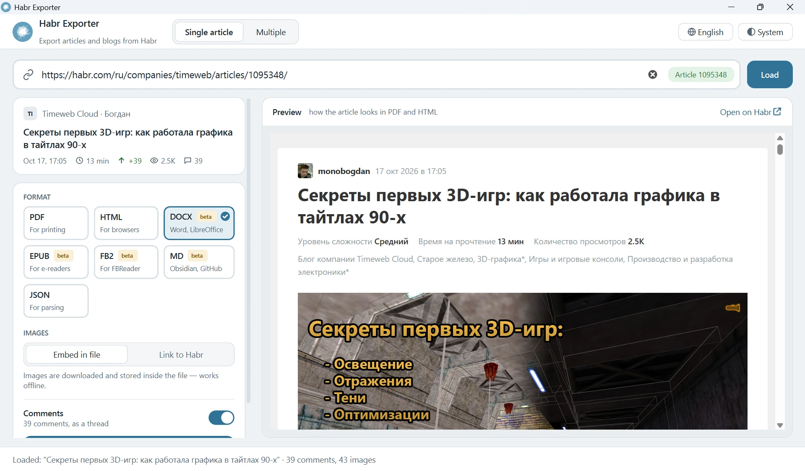
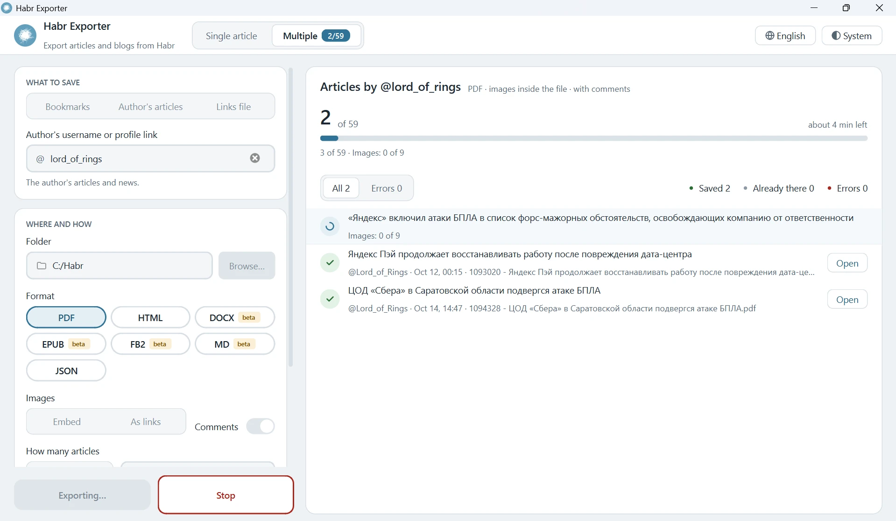
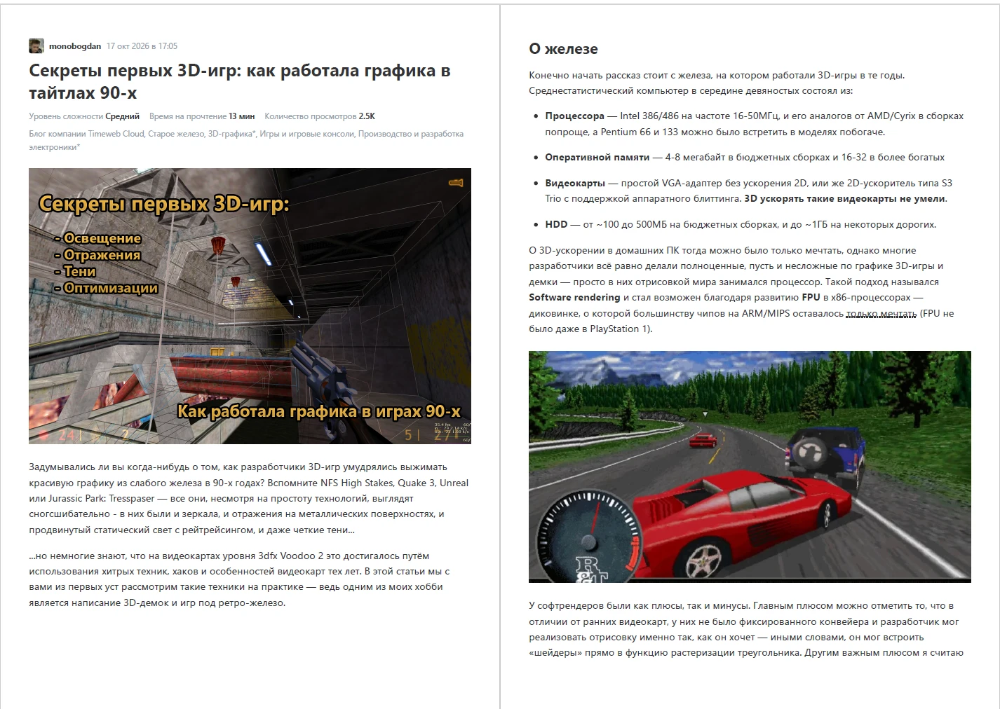
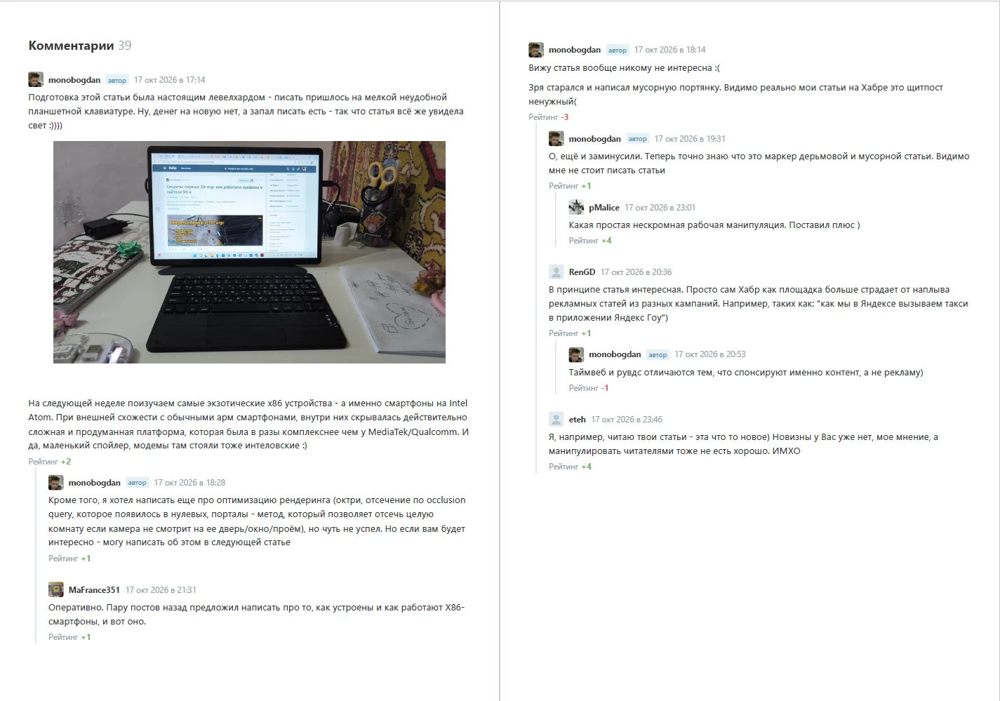

Keep your favourite
Habr articles forever
Save articles with comments and images as PDF, HTML, DOCX, EPUB, FB2 or Markdown, in a layout that mirrors the site. JSON for your programs.

Everything on the page, saved
Headings, tables, spoilers, formulas, highlighted code, images with captions, author cards, tags and the full comment tree.
Seven formats
PDF, HTML and JSON are the main ones. DOCX, EPUB, FB2 and Markdown are in beta.
With comments
All comments as a tree, just like on the site. Turn them off when you don’t need them.
Offline images
Embed images into the file so it opens anywhere, or link to Habr for a smaller size.
Batch export
An author’s whole blog, bookmarks or a list of links from a file. Reruns download only new articles.
GUI and CLI
A window for people, habr-exporter-cli for scripts and automation.
Light, dark, RU/EN
System, light or dark theme, Russian or English interface. Your choices are remembered.
See it in action
Batch backups with progress and a log, and PDFs that look like the site.



Get started in a minute
Windows, macOS or Linux. Python 3.11+ is only needed for the pip route.
2 · Or install with pip
Gives you the window and the command line.
pip install git+https://github.com/GVCoder09/HabrExporter.git habr-exporter
3 · Use from the terminal
Save one article to a folder as HTML with embedded images.
habr-exporter-cli https://habr.com/ru/articles/123456/ \ -f html -i embed -o ./saved/